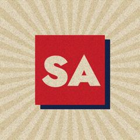

SAVUNMA AJANDASI
Türk savunma sanayii ve milli teknoloji gündemi, her gün, kaynaklı rakamlarla.
Savunma Ajandası bir YouTube kanalıdır. İhracat sözleşmelerini, sipariş defterlerini, yeni sistemleri ve test atışlarını açıklayıcı kısa belgesellerle anlatır. Videodaki her sayı, tarih ve iddia video açıklamasında kaynağına bağlanır.